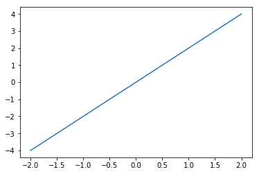

The feeling that you’ll “know where to start” when you see python code in lecture, or when you need to write python for an assignment.
(You won’t be a python expert after one hour)
Basics to variables, lists, conditionals, functions, loops, and the numpy package.
Resources to look further
1.2.1.1 Why Python?
Clean syntax
The same code can run on all Operating Systems
Extensive first and third party libraries (of particular note for our purposes is NumPy)
1.2.1.2 Markdown Sidenote
This text is written in a Markdown block. Markdown is straightforward way to format writeups in Jupyter, but I won’t cover it here for the sake of brevity.
See if you can use Markdown in your next homework, here’s a link that explains the formatting: https://daringfireball.net/projects/markdown/syntax .
You can also look at existing Markdown examples (i.e. this worksheet) and emulate the style. Double click a Markdown box in Jupyter to show the code.
1.2.1.3 LaTeX Sidenote
LaTeX (pronounced “La-tech”) is a language itself used widely to write documents with symbolic math
When you add a mathematical formula to these markdown blocks, the math is in LaTeX.
Ex from class: \[V \frac{dC}{dt} = u(t) - Q C(t)\]
A good resource: https://en.wikibooks.org/wiki/LaTeX/Mathematics
1.2.2 Python Basics
1.2.2.1 Variables
#A variable stores a piece of data and gives it a nameanswer =42#answer contained an integer because we gave it an integer!is_it_thursday =Trueis_it_wednesday =False#these both are 'booleans' or true/false valuespi_approx =3.1415#This will be a floating point number, or a number containing digits after the decimal pointmy_name ="Jacob"#This is a string datatype, the name coming from a string of characters#Data doesn't have to be a singular unit#p.s., we can print all of these with a print command. For Example:print(answer)print(pi_approx)
42
3.1415
1.2.2.2 More Complicated Data Types
#What if we want to store many integers? We need a list!prices = [10, 20, 30, 40, 50]#This is a way to define a list in place. We can also make an empty list and add to it.colors = []colors.append("Green")colors.append("Blue")colors.append("Red")print(colors)#We can also add unlike data to a listprices.append("Sixty")#As an exercise, look up lists in python and find out how to add in the middle of a list!print(prices)#We can access a specific element of a list too:print(colors[0])print(colors[2])#Notice here how the first element of the list is index 0, not 1! #Languages like MATLAB are 1 indexed, be careful!#In addition to lists, there are tuples#Tuples behave very similarly to lists except that you can't change them # after you make them#An empty Tuple isn't very useful:empty_tuple = ()#Nor is a tuple with just one value:one_tuple = ("first",)#But tuples with many values are useful:rosa_parks_info = ("Rosa", "Parks", 1913, "February", 4)#You can access tuples just like listsprint(rosa_parks_info[0] +" "+ rosa_parks_info[1])# You cannot modify existing tuples, but you can make new tuples that extend # the information.# I expect Tuples to come up less than lists. So we'll just leave it at that.
['Green', 'Blue', 'Red']
[10, 20, 30, 40, 50, 'Sixty']
Green
Red
1.2.2.3 Using Variables
float1 =5.75float2 =2.25#Addition, subtraction, multiplication, division are as you expectprint(float1 + float2)print(float1 - float2)print(float1 * float2)print(float1 / float2)#Here's an interesting one that showed up in the first homework in 2017. Modulus: print(5%2)
8.0
3.5
12.9375
2.5555555555555554
1
1.2.2.4 Importing in Python: Math and plotting
#Just about every standard math function on a calculator has a python equivalent pre made.#however, they are from the 'math' package in python. Let's add that package!import mathprint(math.log(float1))print(math.exp(float2))print(math.pow(2,5))# There is a quicker way to write exponents if you want:print(2.0**5.0)#Like in MATLAB, you can expand the math to entire listslist3 = [1, 2, 3, 4, 5]print(2* list3)
#We can plot easily in Python like in matlab, just import the relevant package!%matplotlib inlineimport matplotlib.pyplot as pltx_vals = [-2, -1, 0, 1, 2]y_vals = [-4, -2, 0, 2, 4]plt.plot(x_vals, y_vals)
1.749199854809259
9.487735836358526
32.0
32.0

1.2.2.5 Loops in Python
#Repeat code until a conditional statement ends the loop#Let's try printing a listfib = [1, 1, 2, 3, 5, 8]#While loops are the basic typei =0while(i <len(fib)):print(fib[i]) i = i +1#In matlab, to do the same thing you would have the conditional as: counter < (length(fib) + 1)#This is because matlab starts indexing at 1, and python starts at 0.#The above type of loop is so common that the 'for' loop is the way to write it faster.print("Let's try that again")#This is most similar to for loops in matlabfor i inrange(0, len(fib)) :print(fib[i])print("One more time:")#Or you can do so even neaterfor e in fib:print(e)
1
1
2
3
5
8
Let's try that again
1
1
2
3
5
8
One more time:
1
1
2
3
5
8